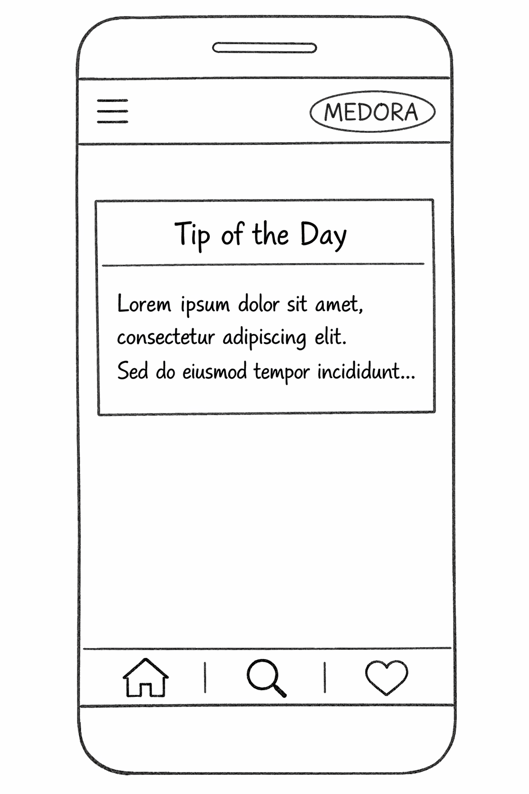
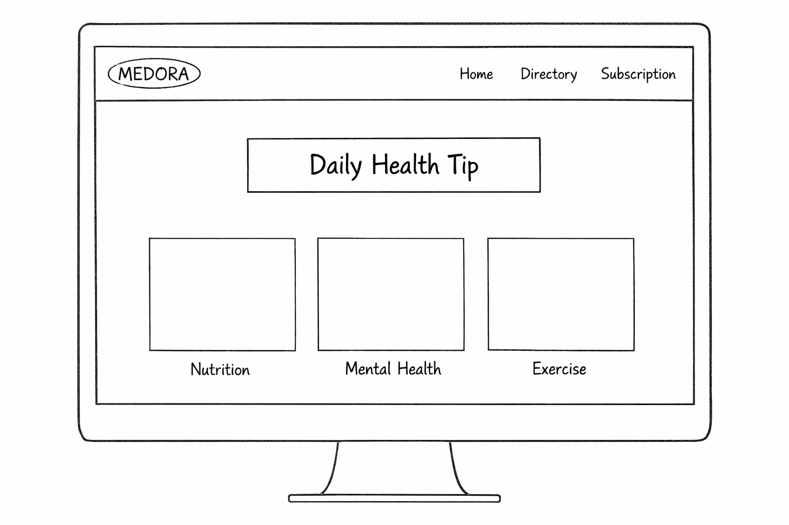

Overview
Your Doctor Medora/h3>
Medora
I chose this name because it represents a reliable and modern source of health information. It is a simplified, informational branch of my personal project, focused on delivering daily wellness advice.
Site Purpose
Medora is a Daily Health & Wellness Information Portal. Its primary purpose is to educate users by providing a "Tip of the Day" and a directory of health advice categorized into Nutrition, Mental Health, and Exercise. The site also allows users to subscribe to updates, helping them stay consistent with their wellness goals through simple, actionable advice.
Scenarios
Questions our target audience might ask:
- "I want to learn a quick, new health habit for today; where can I find a daily tip?"
- "I am looking for specific advice on mental health or nutrition; how can I find that category?"
- "How can I subscribe to get these health tips sent to me regularly?"
Branding
Website Logo
Design
Color Palette
I selected a calming blue (#0077B6) to represent trust and health, paired with a soft light blue (#CAF0F8) for a clean, airy feel. A dark grey is used for text to ensure readability on the informational pages.
| Primary: #0077B6 | Secondary: #CAF0F8 | Accent: #023E8A | Text: #333333 |
Typography
Headings: Montserrat
Body Text: Roboto
I chose Montserrat for headings because it is strong and modern, perfect for the "Tip of the Day". Roboto was chosen for body text because it is easy to read, which is essential for an informational portal.
Wireframes
Below are the wireframes for the Home Page (featuring the Daily Tip section).
Mobile View

Desktop View
